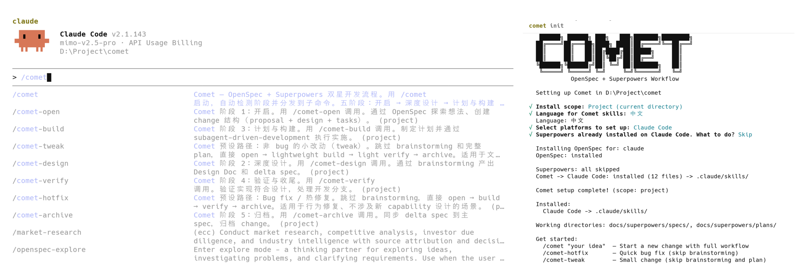
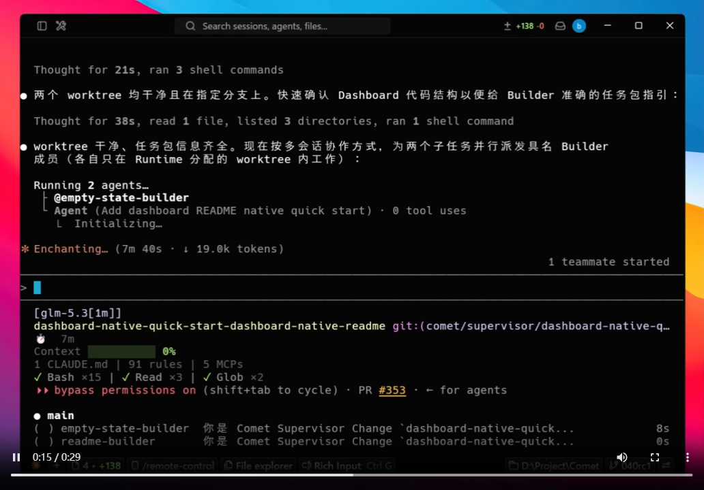
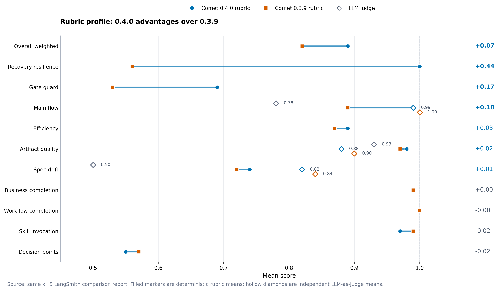
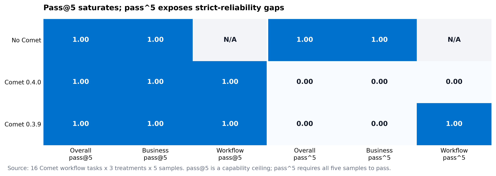

最近在 GitHub 上翻到一个开源项目，叫 Comet，挺有意思，让我把它的文档从头翻了一遍。
它解决的是一个大家可能都有体会、但很少被拿出来单说的麻烦。
用 AI 写代码这件事，早就不新鲜了。补一个函数、生成一个接口、随手改个 bug，几十上百行的活儿，现在的模型基本都能自己搞定。
但真实的工程任务，很少是几十行。
一个需求拆下来，可能是十几个文件、好几个接口、一堆边界条件，还要跑测试、过评审、写文档、最后归档。
这种活儿丢给 AI，麻烦就来了。
上下文一满，它开始忘事。你关掉编辑器，第二天回来，它不知道该接着干啥。
更麻烦的是，你压根没法判断它这次干的，到底比上次好还是差。
Comet 想补的，就是这后半程。
它的官方定位只用了一句话：面向 Coding 的可恢复长程任务工作流与 Skill 平台。读着有点绕，翻成大白话是三件事——任务中断了能接着跑，干活的过程有状态、能检查，Skill 写得好不好有办法量化。
01
三个入口，覆盖写、造、评
Comet 把能力收拢在很低的记忆门槛上。装完之后，你基本只需要记住三个词。
/comet，进入项目配置的工作流，处理一个真实需求。
/comet-any，组合任意 Skill，把它整理成可打包、可分发的 Bundle。
comet eval，评估任意 Skill 的实际效果。
一句话概括。写需求用 /comet，造 Skill 用 /comet-any，评 Skill 用 comet eval。
没有把文档写进备忘录，你也能上手。
02
装它，就两行命令
前置条件很简单。Node.js 22.16+（或 24+）加一个 Git，就够了。它是纯 Node 的 runtime，Windows、macOS、Linux 都能跑，不依赖 Bash 或 WSL。
安装一行搞定。
npm install -g @rpamis/comet
然后进到你要用它的项目里初始化。
cd your-project
comet init
初始化是交互式的，会介绍并让你在 Native、Classic、两者 之间做选择。
这里要划个重点。Native 和 Classic 不是「轻量版」和「完整版」的关系，官方说得很明确，两者彼此独立，也不会互相升级。
Native 面向能自己规划、自己验证的强模型。确认需求后，计划、实现、测试、审查的方法交给模型自主判断，Comet 负责状态检查、验收和可恢复归档。
Classic 保留 OpenSpec 加 Superpowers 的完整五阶段方法，适合需要明确方法论和强约束的场景。

左边是 /comet 在 Claude Code 里的入口说明，右边是 comet init 自动装好 OpenSpec 与 Superpowers 的输出
不想交互，也可以直接指定。
comet init --workflow classic
comet init --workflow both
配置统一写进 .comet/config.yaml。/comet 只读这个文件，然后确定性地转发到对应工作流，不按任务大小瞎猜，也不把两边混着用。
03
一个简单示例：从建需求到归档
光说概念太空。假设你的项目要加一个「短信验证码登录」。
在你的 AI 编程工具里，直接说一句就够。
/comet 给登录模块加一个短信验证码登录，并补齐单元测试
Comet 会接管往下的事。它先建一条 change（可以理解为「一个独立的需求单元」），再按你的选择准备一个隔离工作区，当前分支、独立分支或者 worktree 都行。
然后，在 Native 模式下，它会放权给模型自己去规划、实现、测试、审查。Comet 不插手具体怎么写，只负责在关键节点做状态检查，判它有没有达标。
整条过程，Agent 断开也能接着跑，因为状态是落在项目里的。
如果你更习惯敲命令，同一个需求也有等价的 CLI 写法。
comet native new add-sms-login --task "add SMS login"
comet native status --json
comet native next add-sms-login --summary "Shape confirmed" --confirmed
comet native archive add-sms-login --dry-run
四行命令，对应的正是「建需求 → 看状态 → 确认边界 → 预演归档」。
值得一提的是最后那步。归档不会上来就动手，它会先跑一次 dry-run，把唯一的续接命令、完成选项和阻塞路径都摆在你面前。
你确认，Runtime 才接管归档提交。不用重复查状态，也不用自己手工提交那些运行时文件。这套「先预演、再确认」的节奏，是它敢说自己「可恢复」的底气。
04
两个加分项：多 Agent 协作与 Skill 考试
用下来，我觉得 Comet 最值得看的是两块。
第一块，是复杂需求的并行交付，官方叫 Supervisor Change。
当一个需求里包含多个能独立做、独立验的交付项时，它会把目标拆成带依赖的子 change，用 DAG 管理就绪顺序，再让 Codex 的多会话、或者 Claude Code 的 Agent Teams，去各自的独立 worktree 里并行实现和验证。
调度、任务身份、验证、有序集成，最后父 change 的统一验收，全归 Runtime 管。你在界面上看到的是两个子任务在同时推进，背后其实是它把依赖关系理清楚了。

Supervisor Change 为两个子任务并行派发 Builder，各自只在 Runtime 分配的 worktree 里工作
第二块，是给 Skill 配了套「考试系统」。
写 Skill 最容易翻车的地方，是改完之后你只能凭感觉说「好像变好了」。Comet 用 Rubric 结构化评分，加上 Pass@k、Pass^k 两个指标，让 Skill 的演进有可比较的依据。
评估一个本地 Skill，最短路径就三行。
comet eval ./my-skill --collect
comet eval ./my-skill --html
comet eval ./my-skill --quick --html
--collect 只做静态发现和配置检查，不跑模型、不起容器，是最便宜的排错入口。--quick 则走一个固定的冒烟任务，适合低成本试水。
它还把主执行和 LLM-as-Judge 拆成两套独立配置，默认用 local 套件，需要接企业环境时可以切到 LangSmith 或 Langfuse，让 run、rubric 反馈、成本和 Claude Code 轨迹都能追溯。

0.4.0 与 0.3.9 的 Rubric 剖面对比，恢复韧性、阶段守门等维度的分差一目了然。来源：Comet 官方评估
一个双 Agent 架构，就能在你的生产环境里自动把评估跑完。
05
最后，看几个数字
项目自己做了一组 Native 与 Classic 的对齐实验。16 个任务，每种模式各跑 48 次。
在双方都通过的 41 组配对样本里，Native 的 总 Token 少了 76.8%，Agent 轮次少了 57.4%，耗时少了 47.4%。
而在严格可靠性这个更难的指标上，Native 的 pass^3 达到 87.5%，比 Classic 高出 12.5 个百分点；两者的 pass@3 都是 100%。

Pass@5 很快饱和，Pass^5 才能暴露严格可靠性上的差距。来源：Comet 官方评估
翻译一下。Pass@5 大体是「跑 5 次里有没有一次成」，多数方案都能满分，看不出差别。
Pass^k 要求 5 次全都成，这才是工程里真正关心的稳定性。图上能直接看到，No Comet 和 0.3.9 在 Overall pass^5 上是 0.00，只有 0.4.0 顶住了。
除了这几个数字，还有两件事我记了一下。
一是平台覆盖。comet init 一次支持 37 个 AI 编码平台，Claude Code、Cursor、Codex、Copilot、Trae 这些都在列。Skill 支持项目级和全局安装，还能按平台差异落到不同目录。
二是它自带一个三栏 Dashboard，在浏览器里能看进度、看 Git worktree、看验收结果和归档记录，也能顺手管理个人记忆和项目知识。项目是 MIT 协议开源的。
Comet Dashboard：左侧切换工作区与工作流，中间看产物与门禁进度，右侧给下一步建议
过去两年，AI 编程工具都在比谁写得更快。
Comet 比的是另一件事，谁能把整条链路，从头到尾稳稳地交出去。
当然，它也不是没有门槛。Native 依赖强模型，弱模型未必撑得住自主规划；Classic 的五阶段更重，小改动反而显得繁琐。
所以它更适合的场景，是那种一个人做不完、又必须做得可追溯的长任务。这种活儿，恰好是 AI 编程工具过去最不擅长的。
—— Comet
Agent Skill Harness，把想法变成可评估的工作流
项目地址：https://github.com/rpamis/comet
文档：https://docs.comet.rpamis.com